团队风采▕ 超神小分队的四人同之旅
圣诞节之夜，远徒户外超神小分队集结出发四人同。不一样的四人同，不一样的户外小分队！
“ 相聚是缘 ”
因为热爱
不同地方，不同职业，不同年龄的
我们相遇了
因为「远徒户外」，我们聚集
这次圣诞，我们徒步四人同
寻一份星空之礼
——超神小分队
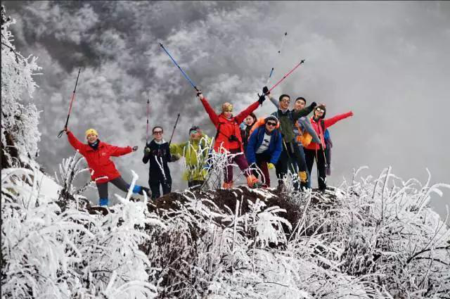关于小分队
20岁？30岁？40岁？年龄从来不是问题，一颗徒步的心才是我们最大信念，我们是超神小分队。
在这个小分队里，我们有来自各个地方和不同职业的朋友，有新朋友也有老朋友。我们一起穿越林海，跨越雪原；我们一起追逐日落和夕阳。看星空漫天，看皑皑白雪，登巍峨高山。
我们的口号是：
“我们的征途不仅是星辰大海，还有自己！”
小分队成员
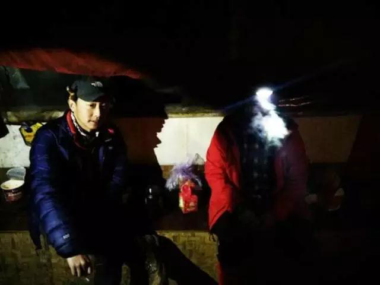领队 磊哥
行走江湖好功夫，智慧大气，坚定有力量
带着东北口音的京腔，人称“行走的小百科”，户外发烧Boy。诗词歌赋，人文哲学，国家政治，商业逻辑能信手拈来，也能把老梗讲得很搞笑的智者。
“买镜面墨镜，就是想给女生照镜子用的”
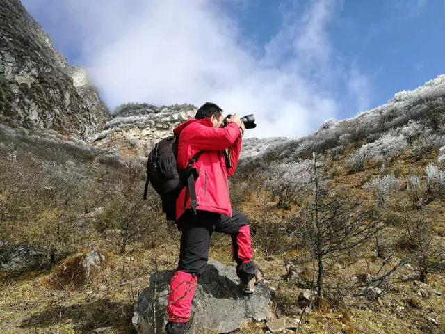领队 凌哥
因为热爱，所以闪耀；因为用心，所以不同。
房地产行业老司机，一言不合就背上背包，飙车去户外。带着双镜头登山，佩服得想叫声大哥，再给大哥让条路。每当说起去过的地方，眼里在发光，快溢出来的自豪，沸腾的热血，不输当年全兴球迷山呼海啸般的呐喊。
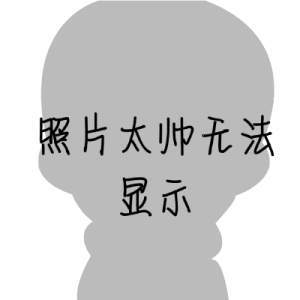领队 玩鄙子 & 冰冰
颜值过高，照片被系统屏蔽，真是令人嫉妒
玩鄙子可是当年叱咤成都股市的风云人物，现在是低调帮大家安排好后勤的大哥
冰冰曾负重20斤徒步进四人同。进可软萌当后勤，退可负重徒步进山，可爱的活力担当。
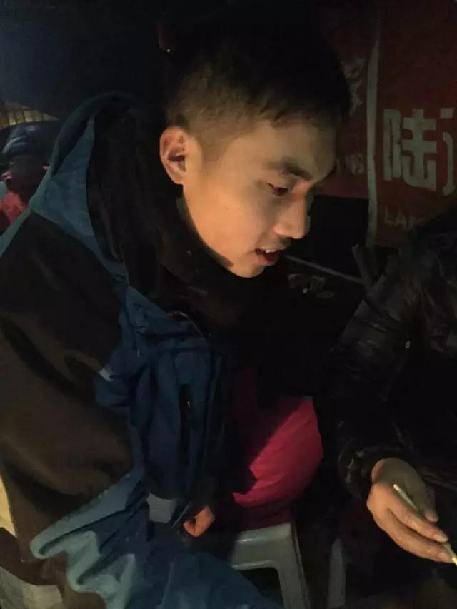小凯
看着一点都不像奶爸的徒步高手
房地产老司机，带着一背包红牛徒步的奶爸。徒步技术含量很高，在雪地和泥地里走了20多公里。裤脚和鞋子干净像什么事都没发生过一样~~。
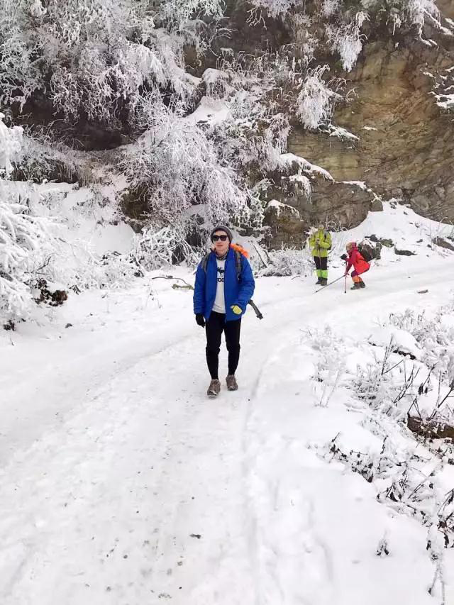乌龟
会喝酒的乌龟
马上就要玩遍全球的户外boy，喜欢看动物世界。曾经浮潜余海胆大难不死。也曾在泰国一个人游到小岛，上岸因为英语瞥，差点回不了酒店。类似的故事还有很多 不要和他说“我有酒，你有故事么”。他可能会喝到你破产。
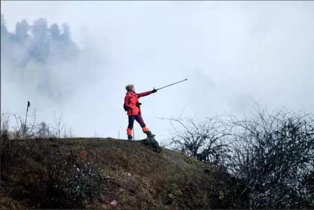Jane
呆萌的女汉子
曾经冲顶奥太娜，却在氧气含量极高的3500高反了！在营地，眼镜被踩坏，在一片朦胧中回家。
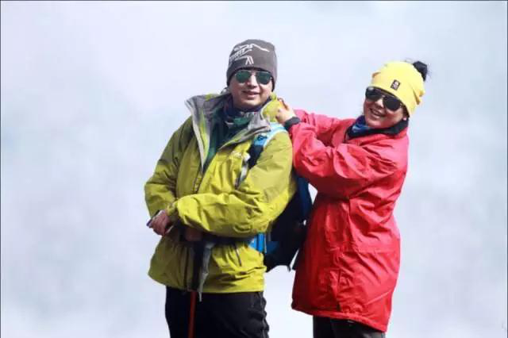哆哆 & 谷雨
暖心呆萌户外夫妻档
全程拍记录视频的暖心girl和 “啊，这里手机有信号了，我在群里发个红包鼓励下大家吧”，时不时冒出金句的老公。
“没在理发店煮出好抄手的理发师不是好墩子”
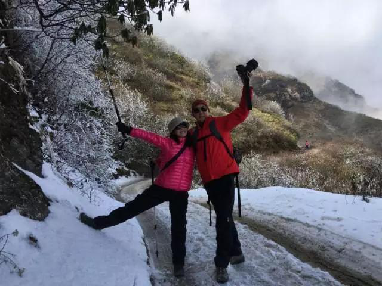金哥&王姐
户外夫妻档 升级版
看到他们，会想起杜拉斯那句“爱之于我,不是肌肤之亲,不是一蔬一饭,它是一种不死的欲望,
是疲惫生活中的英雄梦想”
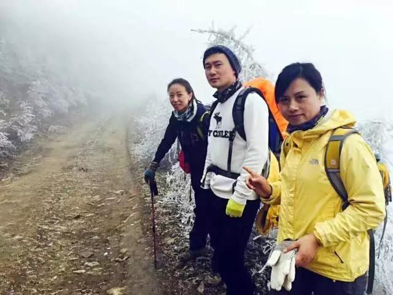花猪（右一）
杀人游戏中正直的法官
花猪、乌龟、二狗子，
从名字来看，集齐七种动物，应该能召唤山神吧
二狗子
背着温江马拉松的奶牛包爬山，行走的温马人肉广告
有时提笔，有时提刀。在海拔500米的成都平原和5000米的四姑娘山都想着同一件事：
吃火锅！
其他成员
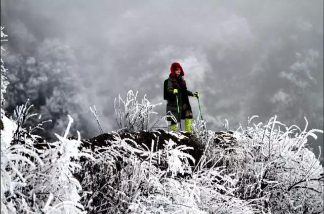霸气值max--爽爷
美腻的小静
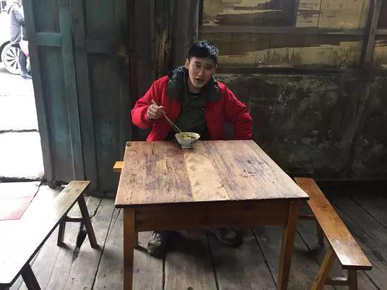颜值担当小鲜肉小何
另外几位新朋友
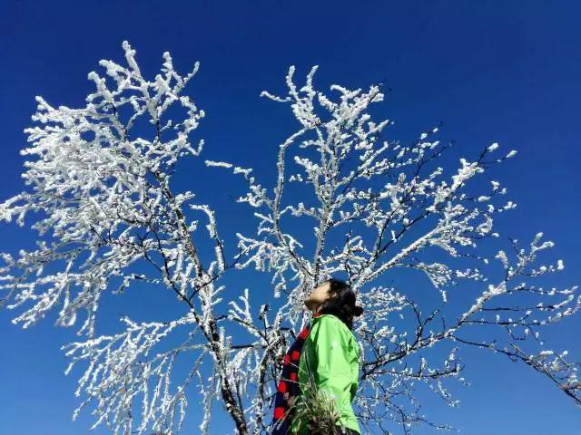旅程开始了！
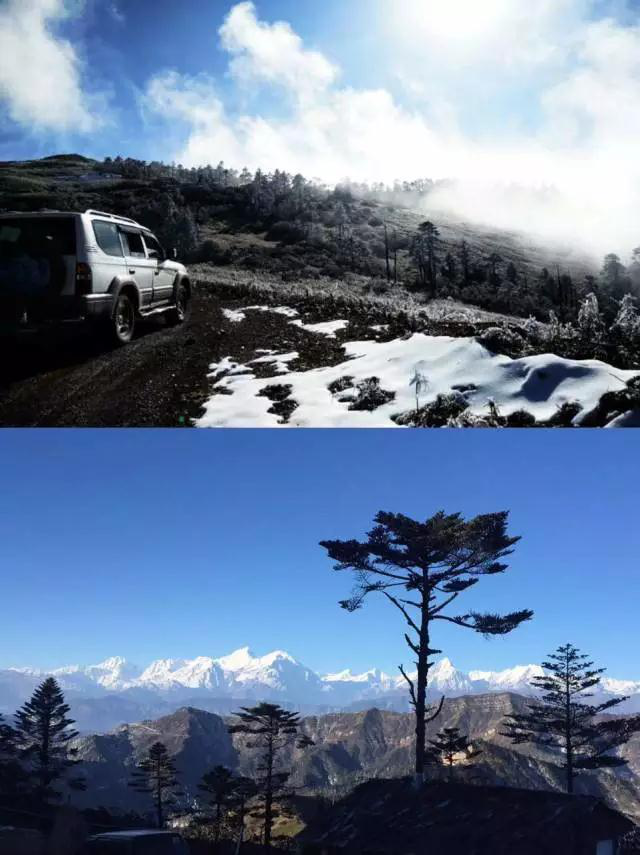 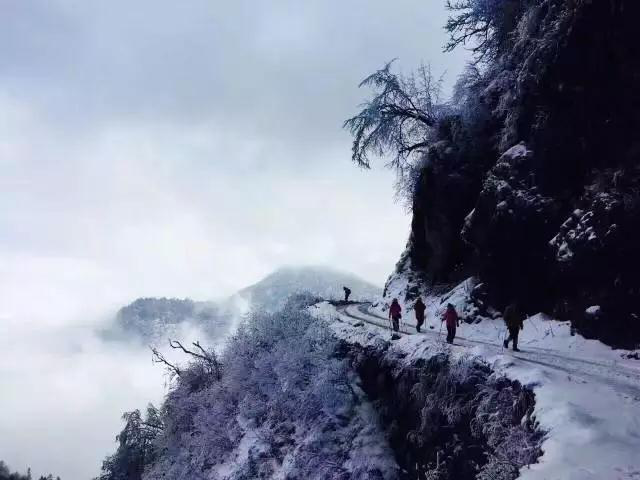 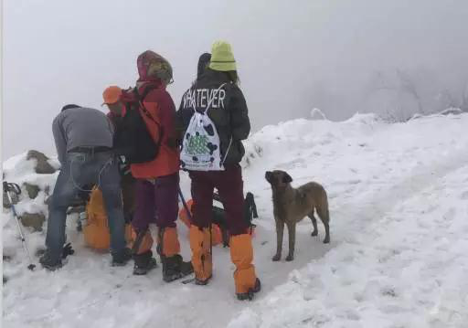2016年12月24日，从冷碛镇坐当地人的车到达长海子，超神小分队开始了四人同徒步之旅。
四人同，是继牛背山之后又一个摄影圣地、观景平台。四人同是牛背山对面的一个山头，地处四川泸定、荥经和天全三县交界，属二郎山分支，大渡河分水岭，最高海拔3560米。据说这个名字由来已久，早在清代，曾经有四位绿林好汉在那里饮血结盟，四人同心，共求生财之道。
路上逗逼欢乐多
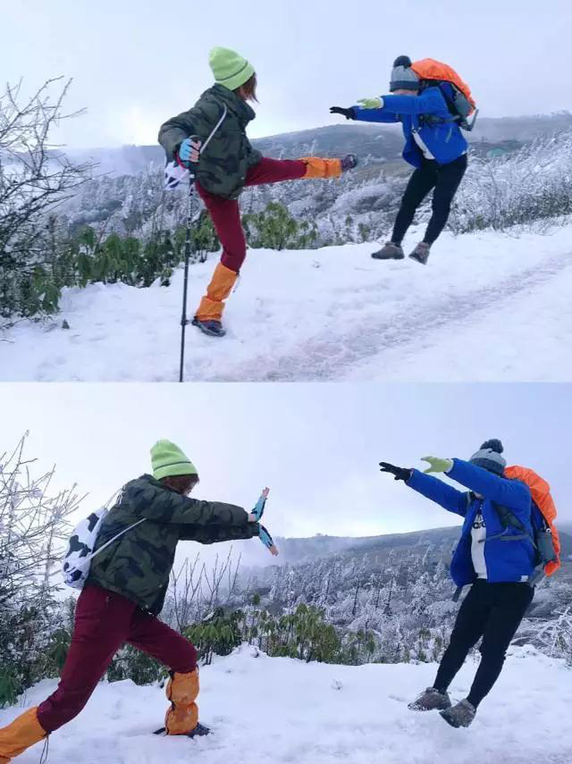“啊嗒“看我飞毛腿！
龟派气功怕不怕？
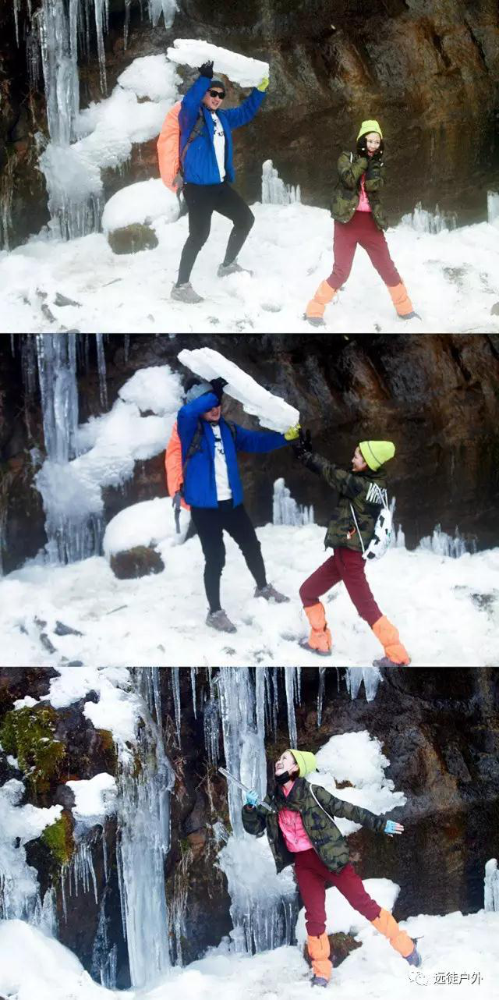来来来，师傅赐你一把绝世无敌宝剑！
师傅！我自己来！
咋不上天呢？
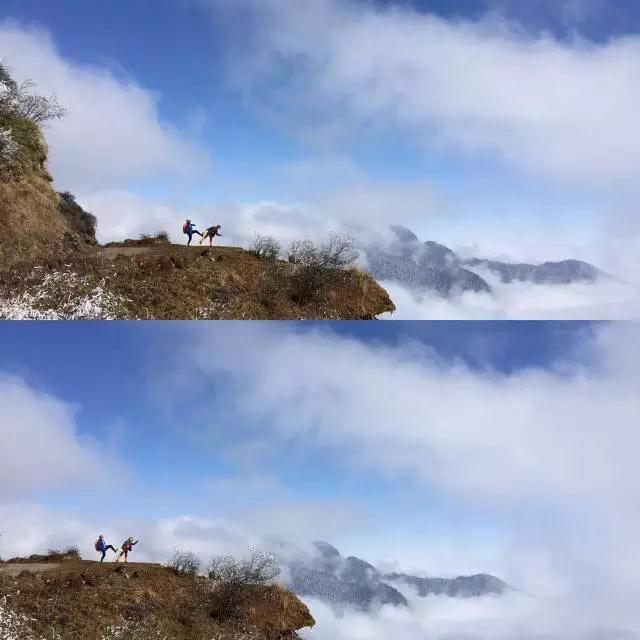 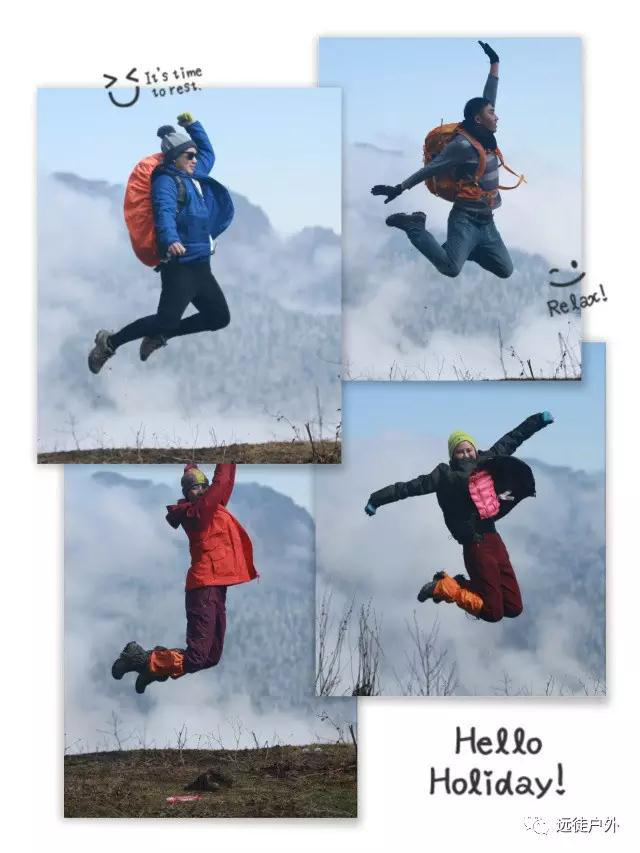途中欣赏着美景，分享着音乐和食物，拍照吹壳子，踩碎的雪发出嘎吱的细响，踏出一首欢快的四人同之歌。
小分队里一路欢声笑语。
和一群幽默会生活的人一起结伴而行，还怕人生会寂寞无趣吗？
情暖小木屋
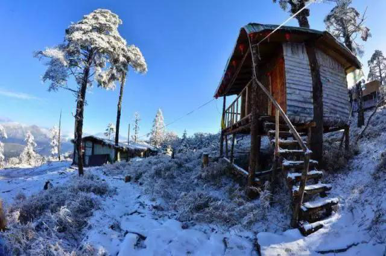在冬雪的陪衬下，营地小木屋有了别样的韵味！
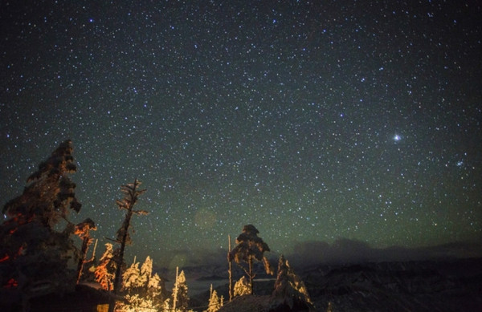入夜，听闻四人同的夜晚星罗棋布，可惜这次旅途小分队遇上了大雾，并没有看到传说的美景，但有了遗憾，才会有下一次的念想，不是吗？
小分队的圣诞大餐
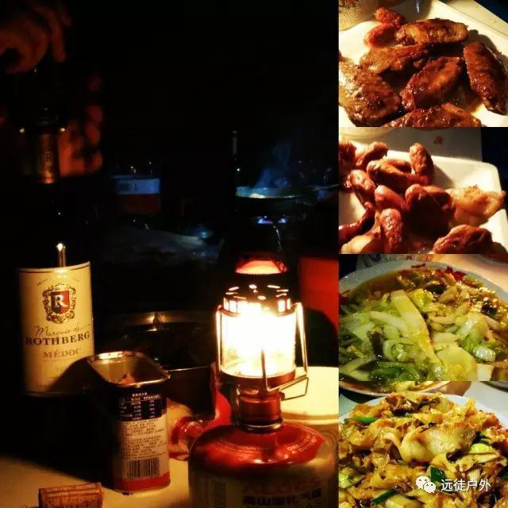 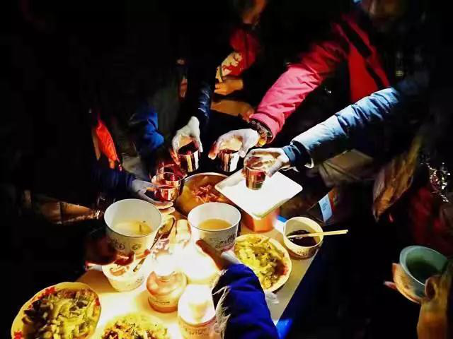旅途条件虽艰苦！但我们超神小分队的 “专业”厨师们还是为大家准备了一顿丰盛的圣诞大餐！烤翅、培根、腊肠、花生、甜点……最惊喜的是还有红酒！
最后，大家一起举杯，在温暖的火炉旁，伴着醇香的红酒和诱人的美食，享受着远徒户外派发可爱麋鹿发卡+红苹果礼物！这是一个美妙的夜晚！
归程—美食打卡！
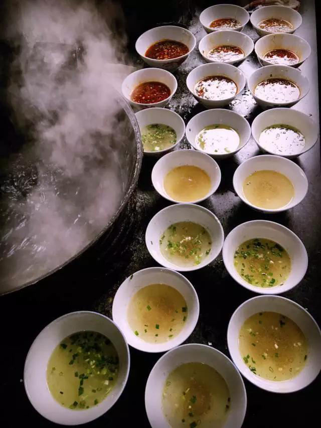 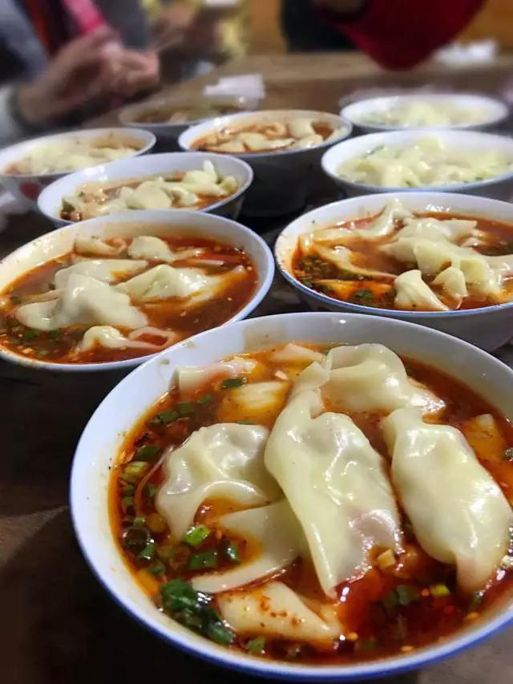返程途中，小分队特意去天全桥头堡打卡抄手和椒麻鸡。对于吃货们来说，带着朝圣的心情去地标性美食打卡，是对食物和生活基本的尊重，也是在严厉生活中对自己的犒赏。
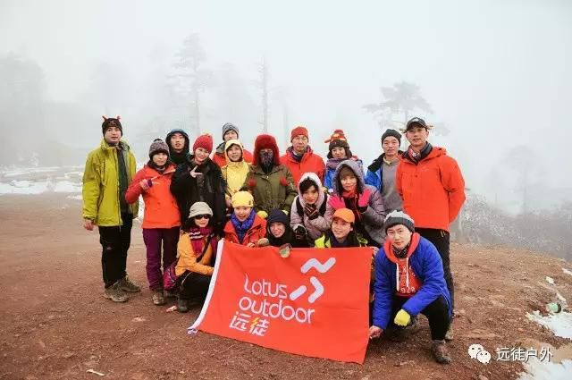四人同之旅结束了，一路上你会发现，真正美丽的除了景色还有一路上陪伴你的朋友们。人生的意义在于不断的去追求和突破，去发现这个世界的美好，去发现身边的人的温暖。
聚集在一起，参加一次徒步旅程，享受美妙的风景，感受美妙的人儿！
感谢「远徒户外」！
——超神小分队